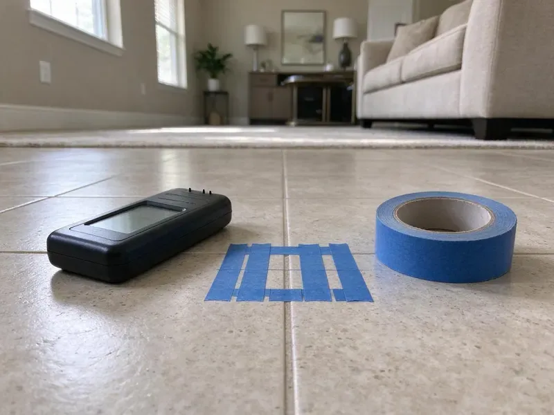

Sewer Line Inspection in Burlington, VT
CKV Plumbing provides comprehensive sewer line inspection services throughout Burlington, VT, identifying hidden issues before they become major repairs.
- Fast, Accurate Diagnostics
- Licensed, Certified Plumbers
- Recorded HD Video Included
- Preventative Maintenance

Need a Sewer Line Inspection in Burlington, VT?
Call now to schedule a camera inspection and get a recorded video of your sewer line.
Detailed Sewer Line Inspection Services for Homebuyers and Owners in Burlington, VT
CKV Plumbing inspects sewer lines by feeding a waterproof HD camera on a push cable through a cleanout or roof vent. The camera records the full length of the line, and a built-in sonde transmitter lets us mark the location and depth of any problem from above ground.
Our expertise includes:
- Detailed camera inspections for main sewer lines.
- High-resolution video camera inspections
- Locating exact pipe damage points

Additional Plumbing Maintenance Services in Burlington, VT
Our maintenance and specialty plumbing services in Burlington, VT protect your home year-round and extend the life of every system.


Customers
Why Choose CKV Plumbing for Sewer Line Inspection in Burlington, VT?
Older properties and homes on shifting soil are vulnerable to sewer line problems. Clay soils in river valleys drain poorly and can hold water against foundations, so sump pumps are common in low-lying homes.
- Pinpoint Accuracy, Our camera inspections reveal the precise location and nature of sewer line problems, eliminating guesswork.
- Plain Explanations, We explain the findings in everyday language and recommend sensible next steps.
- Cost-Effective, By accurately diagnosing the problem, we help you avoid unnecessary excavation and repairs.
Citywide Coverage
CKV Plumbing serves every neighborhood of Burlington, so no matter where you are located, expert sewer line inspection is just a phone call away. From historic districts to new developments, we understand the different plumbing infrastructure throughout Burlington.
Experienced Team
Our technicians have inspected thousands of feet of sewer pipe and know how to read every type of defect. They can tell the difference between minor scale and a serious break.
Safety-First Approach
Safety is our priority in all our operations, especially during sewer line inspections. We adhere strictly to all local Burlington and Vermont plumbing codes and safety regulations, using professional-grade equipment and practices to protect your property and our team.
Trusted Certified Burlington Plumbing Services Professionals
At CKV Plumbing, we take pride in providing licensed, certified plumbing services throughout Burlington, VT. Backed by leading industry credentials, our experienced plumbers combine technical skill with genuine customer care. Whether it is repair, installation, or maintenance, we follow strict safety and quality standards to deliver lasting results you can trust.
Call Us Now PHCC Plumbing Contractor Recognition
PHCC Plumbing Contractor Recognition Better Business Bureau (BBB) Accreditation
Better Business Bureau (BBB) Accreditation Angi Certified Pro
Angi Certified Pro ISO 9001 Quality Management Certification
ISO 9001 Quality Management CertificationModern Sewer Line Inspection Services in Burlington, VT
Detecting Pipe Damage and Corrosion in Burlington, VT
Sewer lines can suffer from various forms of damage, including cracks, breaks, corrosion and sagging sections due to shifting soil. Our camera inspections provide a detailed visual assessment of the pipe's interior, identifying these structural issues. We can determine the severity and exact location of damage, helping you decide between spot repair, relining or full pipe replacement. Early detection is essential to preventing catastrophic failures.

Pre-Purchase Sewer Line Inspections in Burlington
Buying a home is a major investment. Don't let hidden sewer line problems surprise you after closing. CKV Plumbing offers pre-purchase sewer line inspections in Burlington to give prospective homeowners a clear understanding of the property's underground plumbing health. This inspection can reveal costly issues like collapsed pipes, misaligned joints or old cast iron pipes, providing useful leverage during negotiations.
Sewer Line Locating and Depth Marking in Burlington, VT
Before any repair, it helps to know precisely where your sewer line runs and how deep it is. Our camera includes a sonde transmitter that we trace with a receiver above ground. We mark the line and problem spots with paint or flags. This makes excavation or trenchless repair quicker and more precise.
Video Camera Inspection for Blockages in Burlington
When drains slow down or stop completely, a blockage is often the culprit. Our sewer camera inspection can pinpoint exactly where the blockage is located and what's causing it, whether it's grease buildup, foreign objects or sediment. This precision allows us to perform targeted clearing without unnecessary digging, saving you time and money. We can navigate bends and junctions to get a full view of the pipe's interior.
Commercial Sewer Line Inspections in Burlington
Commercial properties in Burlington require robust plumbing systems, and our commercial sewer line inspections help maintain their integrity. We handle larger diameter pipes and more complex systems, diagnosing issues that could disrupt business operations. From restaurants to office buildings, CKV Plumbing provides detailed inspections so your commercial property's drains are functioning correctly and compliant with local codes. Prevent costly downtime with our expert service.
Post-Clearing Sewer Camera Inspection in Burlington
After a backup is cleared, a camera inspection shows why it happened. It might be grease, roots, a broken section or an object stuck in the line. Knowing the cause helps you avoid repeat backups. We often recommend an inspection after any main line cleaning.
Sewer Line Inspection Cost Comparison in Burlington, VT
A standard residential sewer camera inspection usually costs $150 to $400. Inspections that require clearing first or roof access may cost more. Compared with sewer repairs that can run $3,000 to $15,000 or more, an inspection is a small investment. It can save you from buying a home with a hidden sewer problem.

Cast Iron and Clay Pipe Condition Assessment in Burlington
Many older homes have cast iron drain lines under the floor and clay sewer laterals outside. Cast iron can corrode and develop scale, cracks and channeling along the bottom of the pipe. Clay joints shift and let roots in. Our camera inspection shows how much life the pipe has left so you can plan repairs on your schedule.
Sewer Camera Inspection Near Me in Burlington, VT
Local experience matters because pipe materials and soil conditions vary across Burlington. We know which areas have older clay or cast iron and which have newer plastic lines. That helps us read what the camera shows accurately.
When you need a sewer inspection for a home purchase or a recurring backup, a fast local appointment helps keep things on track. Our technicians serve all of Burlington and can usually inspect within a day or two. We bring cameras, locators and cleaning equipment on each visit.
CKV Plumbing at a Glance
- Licensed and insured plumbers serving Burlington, VT
- Same-day appointments and 24/7 emergency response
- Clear written estimates, no hidden fees
- 4.8-star rated by 553+ Vermont customers
Burlington Map
Burlington Information
- Population
- 44,528
- Area codes
- 802/860/603
- Service area
- Burlington and communities within 40 miles
- Nearby
- Winooski, South Burlington, Essex Junction, Shelburne
Shifting soil and foundation movement can stress buried pipe, so regular sewer line inspections help Burlington, VT homeowners detect pipe damage early and prevent costly future repairs. Clay soils in river valleys drain poorly and can hold water against foundations, so sump pumps are common in low-lying homes.
Expert Services
Trust our professionals for reliable CKV Plumbing solutions in Burlington, VT.
Our Specialized Plumbing Services in Burlington, VT
At CKV Plumbing, we provide a complete range of plumbing services across Burlington, VT. From leak detection to full system installations, our team ensures fast, precise, and affordable service for both residential and commercial properties. Explore our core services below:


How Our Sewer Line Inspection Service Works in Burlington, VT
CKV Plumbing uses a step-by-step approach for every sewer line inspection, delivering a thorough and accurate assessment for our Burlington, VT customers.
Request a Quote
Contact CKV Plumbing by calling (802) 209-5139 to schedule your sewer line inspection. We will discuss your concerns and set up a convenient appointment time.
Camera Insertion
Our technician will locate an access point, usually a cleanout, and insert a high-resolution camera into your sewer line. The camera is connected to a monitor for live viewing.
Detailed Video Analysis
We meticulously guide the camera through your pipes, recording footage to identify any blockages, cracks, root intrusions or other damage. We note the exact location and nature of any issues.
Frequently Asked Questions About Sewer Line Inspection in Burlington
The cost of a sewer line inspection in Burlington, VT usually ranges from $200 to $500, depending on the complexity of your system and the length of the line. Factors like accessibility and the need for hydro-jetting beforehand can influence the final price. CKV Plumbing provides upfront, transparent pricing after a brief consultation.
Most residential inspections take about one hour. Longer lines or lines that need clearing first can take two to three hours. We provide the video the same day.
If problems are detected, our technician will explain the issues clearly and provide you with a detailed estimate for the necessary repairs. We will go over the best solutions, whether it's hydro-jetting for blockages, trenchless repair or traditional excavation, tailored to your specific situation and budget.
We use professional waterproof sewer cameras, often from brands like RIDGID or MyTana. These cameras are equipped with bright LED lights and self-leveling heads to provide clear, high-definition video footage of the pipe's interior, even in dark or wet conditions.
A camera can find roots, cracks, breaks, bellies, offsets, grease buildup, scale and foreign objects. It also shows the pipe material and overall condition. We mark the location of each defect.
No, a sewer line inspection is generally a very clean and non-invasive process. Our technicians access your sewer line through an existing cleanout, which is a capped pipe designed for plumbing access, usually located outside or in a basement. There is typically no digging involved.
CKV Plumbing stands behind the accuracy and thoroughness of our sewer line inspections. While the inspection itself doesn't carry a 'warranty' like a repair, we stand behind our findings and recommendations. We aim for your full satisfaction with our diagnostic services.
We can often inspect through a roof vent or by removing a toilet. If neither works, we can install a cleanout to code, which also makes future maintenance simpler. We discuss options before starting.
What People Are Saying About Our Plumbing Experts?

Daniel K.
A pipe burst at 11 pm and they actually answered. The plumber showed up within the hour, shut everything down, and had us back to normal the next morning. Could not ask for more.
Emergency Plumbing · Burlington, VT
Mark T.
When our office needed drain cleaning, CKV Plumbing provided quick, reliable service. The plumber arrived on time and made sure every drain flowed perfectly before leaving. Very satisfied.
Drain Cleaning · South Burlington, VT
James P.
Our commercial plumbing system had a leak under the sink, and CKV Plumbing handled it professionally. The plumbers arrived quickly and restored everything without disruption to our customers.
Commercial Plumbing · Shelburne, VTRobert G.
The trenchless sewer replacement saved our front yard. They walked us through the camera inspection footage first so we knew exactly what we were paying for.
Sewer Line Replacement · Essex Junction, VT
Emily R.
I called CKV Plumbing for plumbing repair, and the technician was fast, polite, and thorough. They explained the problem clearly and fixed it the same day. I will definitely hire them again. Highly recommended!
Plumbing Repair · Essex Junction, VT
Patricia H.
We had a slab leak that two other companies could not find. CKV Plumbing located it in under an hour, explained our options, and the price matched the quote to the dollar.
Slab Leak Repair · Essex Junction, VT